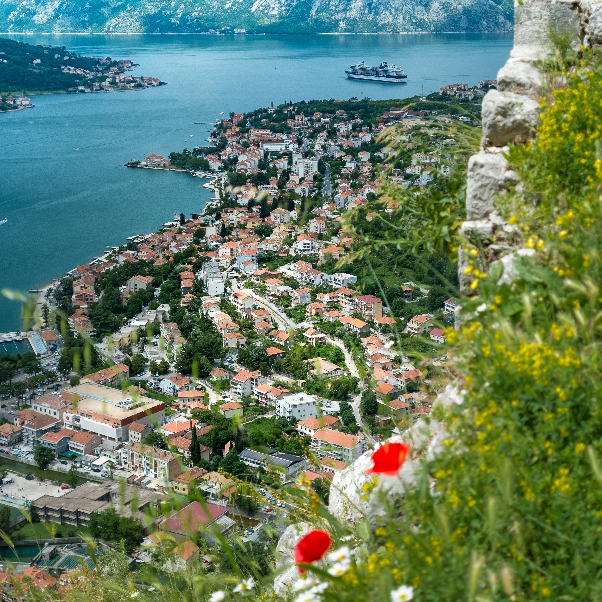
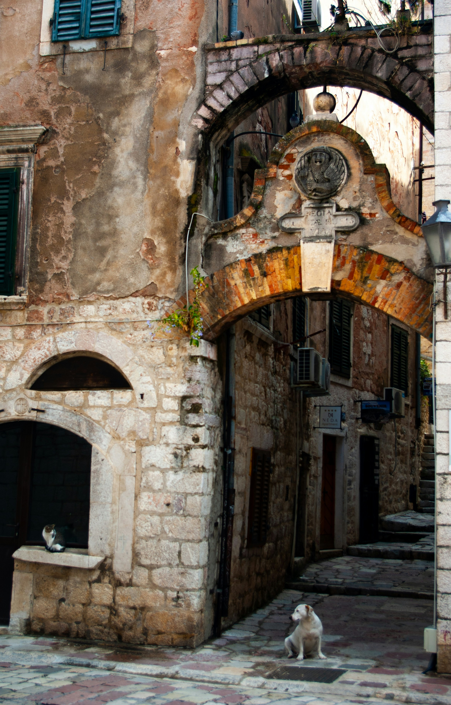

Kotor
Day 1
Kotor is situated on Montenegro's coastline and boasts of a fortified town overlooking the magnificent Mt. Lovćen limestone cliffs. Its medieval old town has numerous Romanesque churches, including Kotor Cathedral, and the Maritime Museum that delves into local seafaring history. The town is bustling with tourists who come to experience its stunning scenery and winding streets lined with squares.